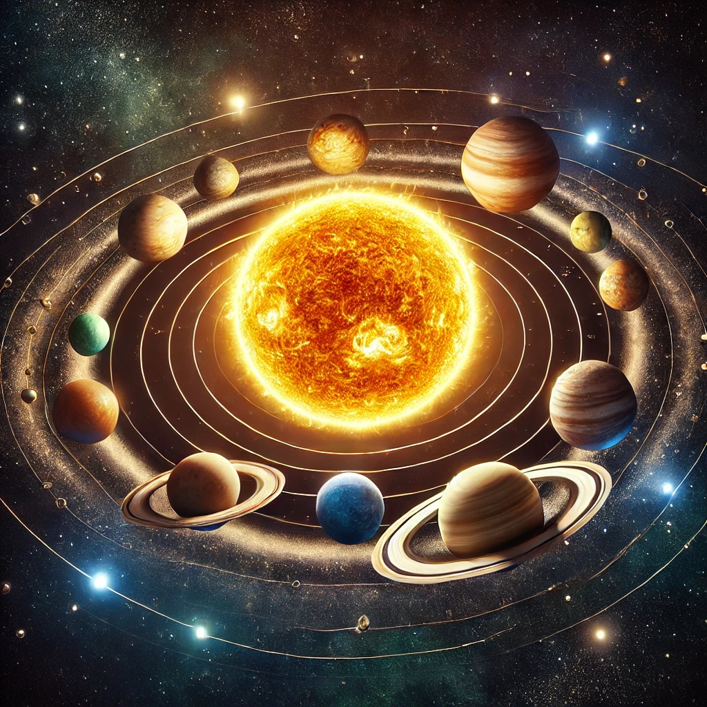
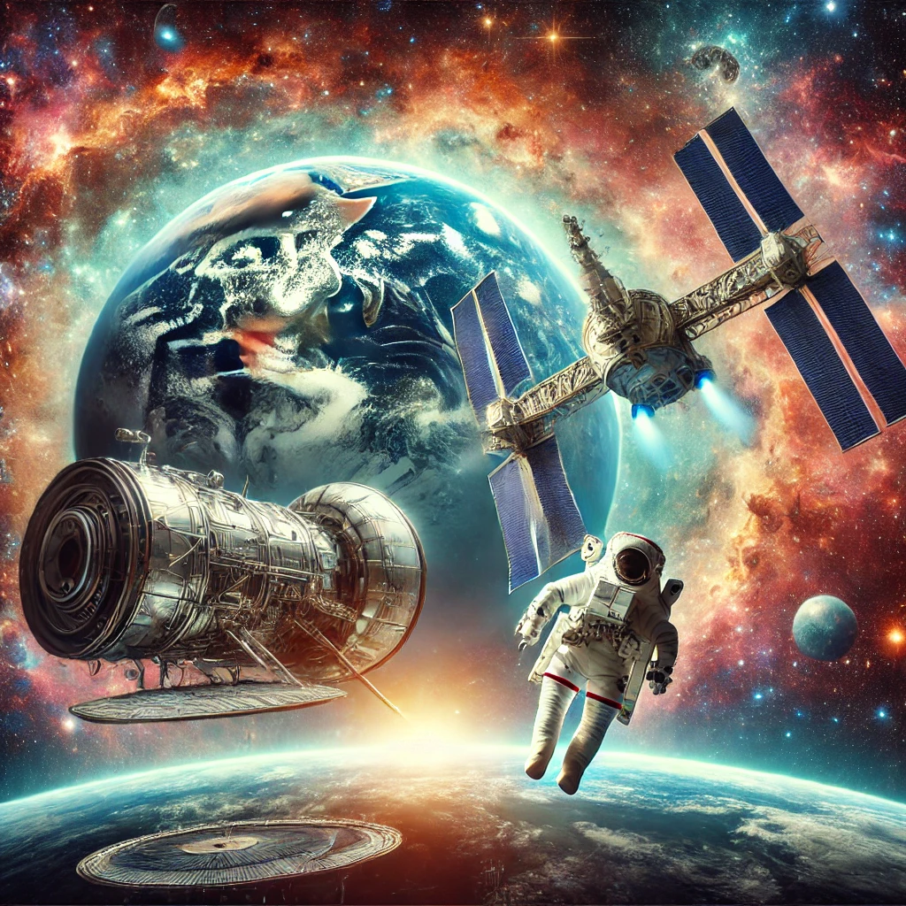

The Beauty of Galaxies
Galaxies are vast collections of stars, gas, dust, and dark matter, bound together by gravity. The Milky Way, our own galaxy, is just one of billions in the universe. Galaxies come in many shapes and sizes, from spirals like ours to elliptical and irregular forms. Exploring them helps us understand the universe's structure and origins.
Galaxies are vast collections of stars, gas, dust, and dark matter, bound together by gravity. The Milky Way, our own galaxy, is just one of billions in the universe. Galaxies come in many shapes and sizes, from spirals like ours to elliptical and irregular forms. Exploring them helps us understand the universe's structure and origins.




Information Page Content:
Our solar system consists of the Sun and the objects bound to it by gravity. These include eight planets, each orbiting the Sun in elliptical paths. The largest planet, Jupiter, is known for its massive size and its Great Red Spot, a giant storm that has lasted for centuries. The smallest planet, Mercury, orbits closest to the Sun and has extreme temperature variations. Earth, our home, is the only known planet to support life, thanks to its favorable atmosphere and conditions. Mars, often referred to as the "Red Planet," is known for its reddish appearance due to iron oxide (rust) on its surface, and scientists are eager to explore its potential for past or present life.
Our solar system consists of the Sun and the objects bound to it by gravity. These include eight planets, each orbiting the Sun in elliptical paths. The largest planet, Jupiter, is known for its massive size and its Great Red Spot, a giant storm that has lasted for centuries. The smallest planet, Mercury, orbits closest to the Sun and has extreme temperature variations. Earth, our home, is the only known planet to support life, thanks to its favorable atmosphere and conditions. Mars, often referred to as the "Red Planet," is known for its reddish appearance due to iron oxide (rust) on its surface, and scientists are eager to explore its potential for past or present life.
Other planets, like Venus and Saturn, have fascinating characteristics. Venus has a dense atmosphere that traps heat, making it the hottest planet in the solar system, while Saturn is famous for its stunning rings made of ice and rock. Uranus and Neptune, both ice giants, are situated in the outer reaches of our solar system. Uranus is unique for rotating on its side, while Neptune has the fastest winds in the solar system.
In addition to the planets, there are also many moons, dwarf planets like Pluto, asteroids, and comets that add to the complexity of our cosmic neighborhood. Our understanding of space and the universe beyond our solar system continues to evolve, with missions and advancements in technology allowing us to explore deeper into space.
Space exploration, such as NASA's Mars missions and the launch of telescopes like the James Webb Space Telescope, are key to expanding our knowledge. These missions not only provide valuable data about our own solar system but also reveal the mysteries of distant galaxies and exoplanets beyond.
As humanity continues to explore and learn more about space, the possibilities for discovery and understanding the universe seem limitless.
| Topic | Description |
|---|---|
| Our Solar System | Our solar system consists of the Sun and the objects bound to it by gravity, including planets, moons, asteroids, and comets. The Sun provides light and energy to all of these objects. |
| The Planets | The solar system has eight planets: Mercury, Venus, Earth, Mars, Jupiter, Saturn, Uranus, and Neptune. Each planet has its unique characteristics, from the hot surface of Venus to the giant rings of Saturn. |
| Space Exploration | Space exploration is crucial for understanding our universe. NASA’s Mars missions and telescopes like the James Webb Space Telescope help us learn more about the solar system and galaxies beyond. |
| Other Objects in Space | In addition to the planets, the solar system contains moons, dwarf planets like Pluto, and countless asteroids and comets. These objects provide insights into the formation of the solar system. |